Falcon HR
User Guide
Everything your HR team needs: the HR dashboard, the Expiry Center, Nitaqat, sponsor history, leaver checklists, documents, alerts, reports, the monthly PDF, attendance, shifts and the roster, plus importing and exporting your data.
What's in this guide
- 1What we built for you
- 2Finding your way around
- 3The HR Dashboard
- 4The Expiry Center
- 5Employee documents
- 6Branches (sponsors / companies)
- 7The Nitaqat Dashboard (Saudization)
- 8Sponsor & deployment history
- 9Leaver checklist
- 10Monthly management PDF
- 11Notifications & alerts — who gets what
- 12Reports & downloading to Excel
- 13Attendance — daily, bulk and Excel upload
- 14Shifts & the Roster
- 15Importing, exporting & mapping all your data
- 16Your daily & monthly routine
- 17Questions & troubleshooting
- 18Words we use
What we built for you
Falcon HR is an add-on that sits on top of Frappe HR. It adds screens, fields, alerts and reports. It does not change anything inside Frappe HR, so Leaves, Payroll, Shifts and every other HR screen work exactly as before.
| Feature | What it does for you | Where to find it |
|---|---|---|
| HR Dashboard | One page with your whole workforce: headcount, branches, projects, document health, upcoming expiries, nationality mix, joiners and leavers. Every number and chart is clickable. | Desktop → Falcon HR |
| Expiry Center | Every employee and company document in one list, sorted by what expires first. Search, 9 filters, table or board view, CSV download. | Sidebar → Expiry Center |
| Days remaining | Under every expiry date on the Employee and Branch forms you now see "33 days remaining" (or "EXPIRED … days ago"), coloured by urgency. | Employee → Employee Documents tab |
| Branch overview | The top of every Branch form shows active employees and their Iqama status (valid / expiring / expired / no date). | Branch form |
| Qiwa & Muqeem | New fields on each Branch: Qiwa establishment number + issue/expiry date, Muqeem account number + subscription start/expiry. | Branch form → Qiwa & Muqeem |
| Company document alerts | Alerts for CR, VAT, Qiwa and Muqeem, kept separate from employee alerts so they are easy to tell apart. | Bell icon & email |
| Daily bell alerts | Every morning the system posts reminders to your notification bell at 60, 30, 15, 7, 3, 1 and 0 days before expiry, and after expiry. | Sidebar → Notification |
| 6 reports | Document Expiry Register, Employee Document Register, Branch Compliance Register, Branch Workforce Summary, Project Assignment Register, Project Location Summary. All of them export to Excel. | Sidebar → Reports |
| Smart search | Type a name, employee ID, Iqama number, passport number, phone or project and jump straight to the person or branch. | Dashboard search bar |
| Employee status switch | Look at Active, Inactive, Suspended, Left or All employees on the dashboard and in the Expiry Center. | Dashboard & Expiry Center |
| Nitaqat Dashboard | Saudization per sponsoring branch against its target, Saudis needed, band and size charts, filters and CSV. | Sidebar → Nitaqat Dashboard |
| Sponsor & deployment history | Which branch sponsored each employee, on which project and location, and for how long. One sponsor at a time. | Employee → first tab; Sidebar → People |
| Leaver checklist | 13-step Saudi leaver checklist (Qiwa, final exit, insurance, GOSI, assets, settlement…) created when someone is set to Left. | Employee (Left) → Leaver Checklist |
| Monthly management PDF | One-click monthly report: headcount, movements, compliance, Nitaqat, attendance, projects. | HR / Nitaqat Dashboard → Monthly PDF |
| Arabic | Every Falcon HR screen, report, message and PDF is available in Arabic (right-to-left). Switch with Switch language to AR. | Sidebar → Switch language |
| Fixes | Employee forms no longer open as "Not Saved". The list sort menu no longer hides behind the list. | — |
The colour code used everywhere
| Status | Meaning | What to do |
|---|---|---|
| Expired | The expiry date has already passed. | Renew immediately. The employee may not be working legally. |
| Critical | Expires within the next 30 days (today included). | Start the renewal now. |
| Expiring Soon | Expires in 31 to 60 days. | Plan the renewal and collect the paperwork. |
| Valid | More than 60 days left. | Nothing to do yet. |
Finding your way around
After you log in, the Falcon HR icon is on the desktop. Click it to open the HR Dashboard.
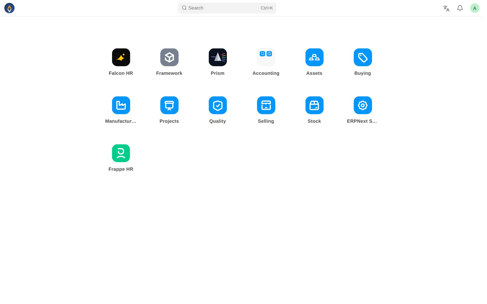
Since Frappe 16.54, Frappe apps have a slim icon rail (the "Dock") on the far left. Falcon HR has its own badge icon there, and its pages open at addresses like /desk/falcon-hr/expiry-center.
The Falcon HR sidebar
The left sidebar has everything an HR person needs in one place. Groups with a small arrow (▸) open and close when you click them.
| Group | What's inside |
|---|---|
| Top links | HR Dashboard, Expiry Center, Nitaqat Dashboard, Employee, Branch |
| People & Organization | Sponsor & Deployment History, Leaver Checklist, Designation, Department, Company, Accommodation (now in its own Falcons Accommodation module) |
| Attendance | Attendance, Employee Attendance Tool, Bulk Attendance Upload, Employee Checkin, Attendance Request, Holiday List |
| Shifts & Roster | Shift Type, Shift Assignment, Shift Assignment Tool, Shift Schedule, Shift Schedule Assignment, Shift Request, Shift Location |
| Reports | The 6 Falcon reports, plus the Monthly Attendance Sheet |
| Frappe HR | Shortcuts to Leaves, Payroll, Shift & Attendance, Expenses, Recruitment, Performance, Tenure, Tax & Benefits, HR Setup |
| Tools & Settings | Data Import, Alert Rules, Notification Log, HR Settings |
The HR Dashboard
Your morning overview. Open it from the desktop icon or from Sidebar → HR Dashboard.

The four headline tiles
| Tile | Shows | Click it to… |
|---|---|---|
| ⚫ Active employees | Employees in the current view, plus how many have left the company. | open the matching Employee list |
| 🔵 Branches | All branches, and how many actually have staff. | open the Branch list |
| 🟡 Expiring in 60 days | Documents in Critical + Expiring Soon. | open the Expiry Center filtered to Critical |
| 🔴 Expired documents | Documents already expired, and the % of documents that are still valid. | open the Expiry Center filtered to Expired |
Search and filters
The bar at the top works on the whole dashboard:
- Search: type at least 2 letters. You can search by name, employee ID, Iqama number, passport number, phone, project or branch. Results appear as you type, and clicking one opens the record. Press Esc to close the results.
- Company, Branch (sponsor), Project, Nationality: pick one or more. Every tile, chart and tab recalculates for that selection.
- Clear: removes all filters.
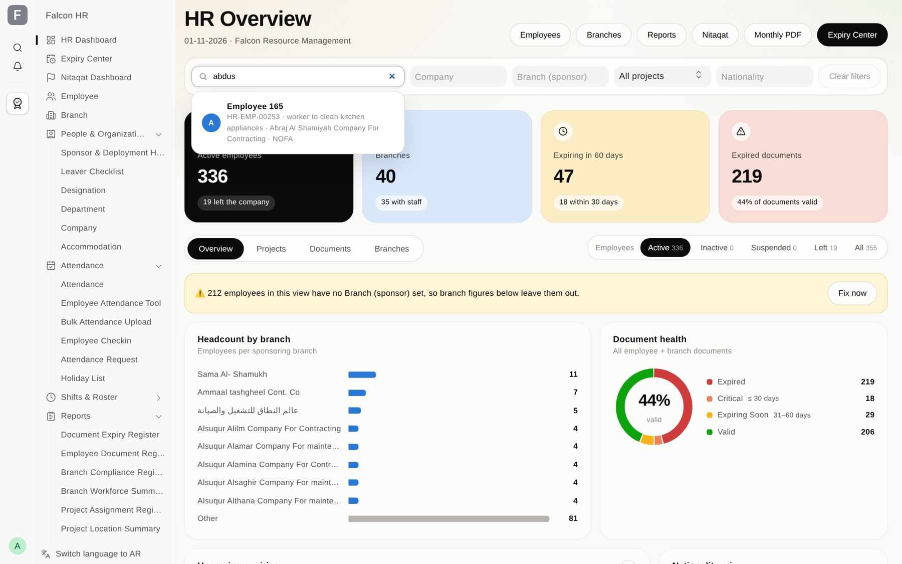
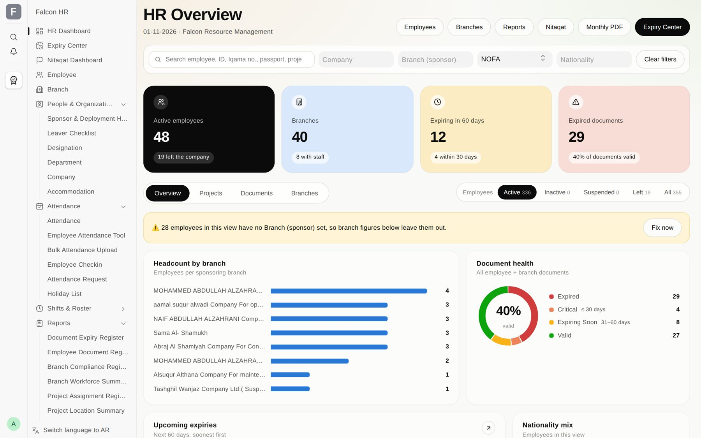
Active, Inactive, Suspended, Left or All
On the right of the tabs, choose which employees to count. Active is the default. Pick Left to review people who have left, for example to cancel their Iqama or insurance, or All for everyone. The small number next to each button is the headcount.
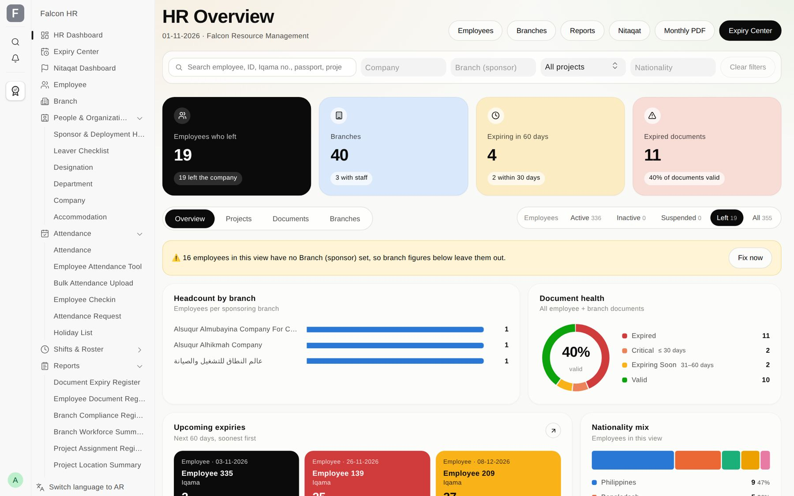
Overview tab
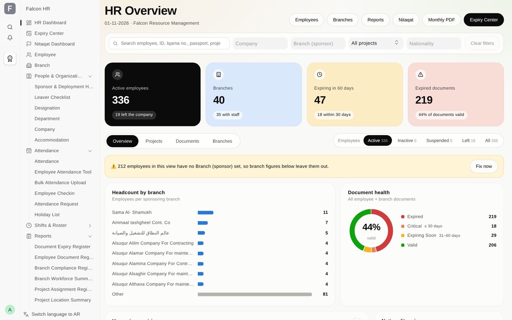
| Card | What it shows | Click to open |
|---|---|---|
| Yellow banner | How many employees have no Branch (sponsor). Branch figures leave them out until it's filled in. | Fix now → list of those employees |
| Headcount by branch | Top branches by number of employees. "Other" groups the rest. | a bar → that branch's employees |
| Document health | Ring with the % of valid documents and counts per status. | a colour → Expiry Center with that status |
| Upcoming expiries | The next documents to expire in 60 days. Black = 7 days or less, red = 30 days or less, yellow = 31–60 days. | a tile → the employee or branch |
| Nationality mix | Top 5 nationalities, with numbers and %. | a nationality → those employees |
| Joiners and leavers | Employees who joined (blue) and left (orange) each month, last 12 months. | a month → who joined that month |
Projects tab
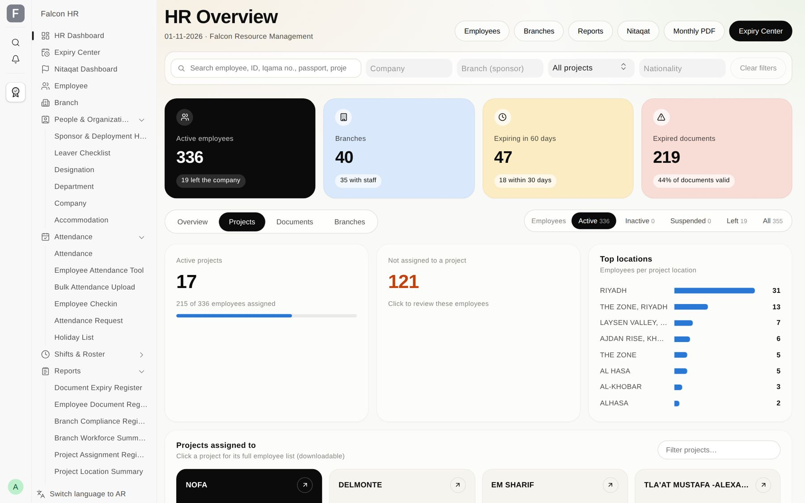
- Active projects: how many projects have staff, and how many employees are assigned.
- Not assigned to a project: click to review those employees and fill in their project.
- Top locations: employees per project location. Click a bar for the full list.
- Project cards: headcount, number of sponsoring branches, Iqama expired / expiring, and the main locations. Click a card to open the Project Assignment Register for that project, which you can download. Use Filter projects… to find one quickly.
Documents tab
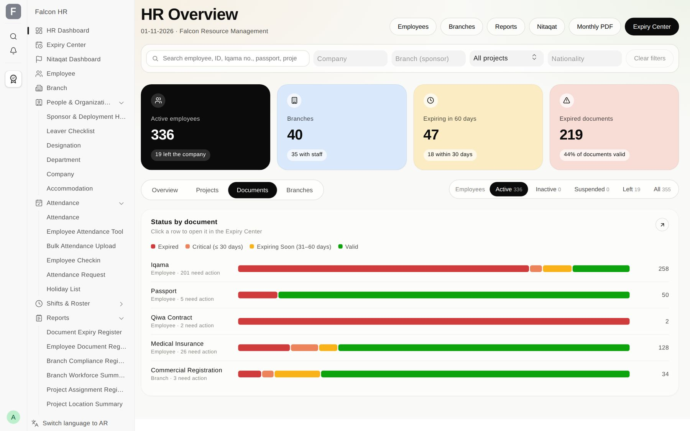
Click any row to open the Expiry Center filtered to that document, for example all Iqamas.
Branches tab
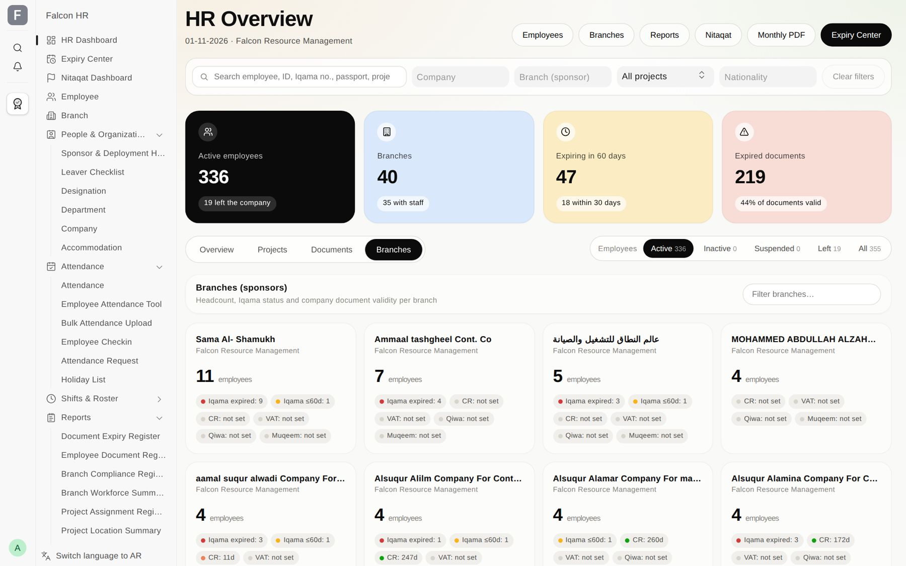
Each chip shows days left: green fine, yellow 60 days or less, orange 30 days or less, red expired, grey = not entered yet. Use Filter branches… to search, and click a card to open the branch.
The Expiry Center
One page for every document that can expire, for employees and for companies/branches, sorted so the most urgent is always on top.
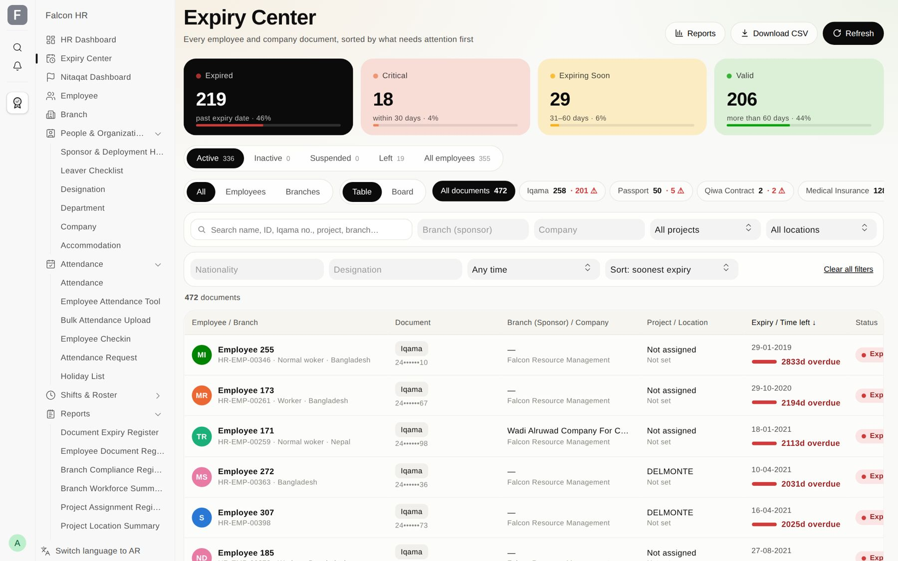
How to use it, top to bottom
- Status tiles: Expired, Critical, Expiring Soon and Valid, each with a count and %. Click a tile to show only that status, and click it again to remove the filter.
- Employee status: Active / Inactive / Suspended / Left / All employees. Branch documents are shown with Active or All.
- All / Employees / Branches: show everything, only employee documents, or only company (branch) documents.
- Table / Board: switch between the list and the board (see below).
- Document chips: one chip per document type with its count. ⚠ shows how many need action. Click a chip to filter, for example to Iqama only.
- Search: name, ID, Iqama number, project, branch… Results update as you type.
- Filters: Branch (sponsor), Company, Project, Location, Nationality, Designation, Expiring within (already expired / 7 / 15 / 30 / 60 / 90 days) and Sort. Active filters appear as tags you can remove with ✕. Clear all filters resets everything.
- Table: click any row to open the employee or branch. Click a column title to sort by it. "Show 100 more" loads more rows.
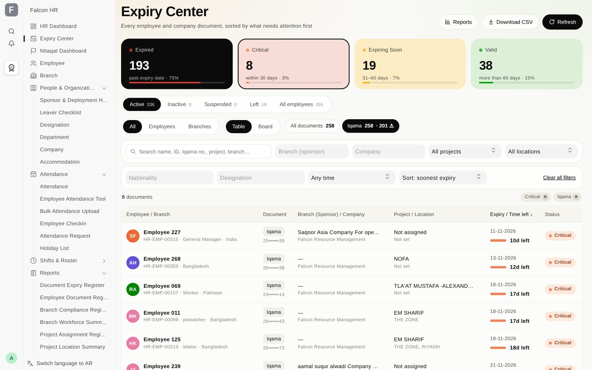
Board view
The board shows four columns (Expired, Critical, Expiring Soon, Valid) with one coloured card per document. It's good for meetings and for seeing the workload at a glance. Click a card to open the record.
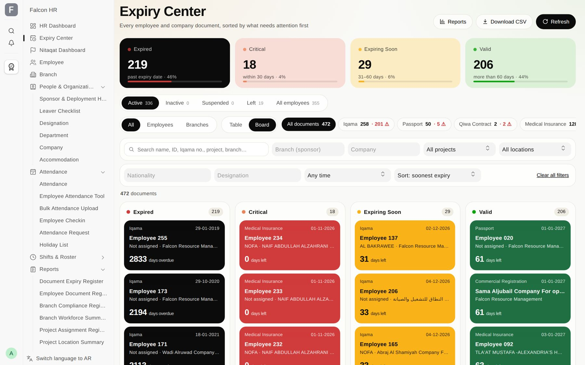
Download
Download CSV saves exactly what you are looking at (with your filters) as a file that opens in Excel. It includes type, name, ID, employee status, document, number, branch, company, designation, nationality, project, location, expiry date, days left and status. For a formatted Excel file, use Reports (Chapter 12).
Documents that are tracked
Employee documents (7)
Iqama · Visa · Passport · Qiwa Contract · Medical Insurance · GOSI · Driving License
Company / branch documents (4)
Commercial Registration (CR) · VAT Certificate · Qiwa Establishment · Muqeem Subscription
Employee documents
Open any employee and go to the Employee Documents tab. Under every expiry date you will now see how many days are left, in colour.
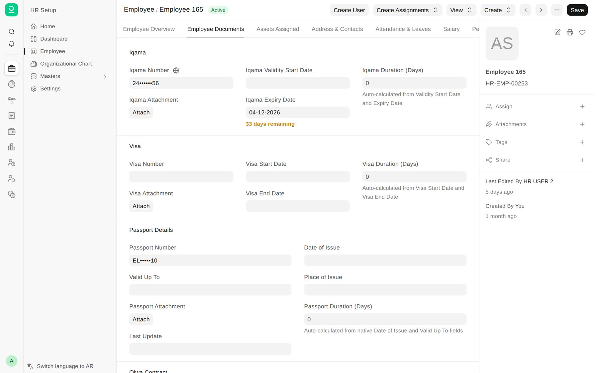
How to record a document
- Open Employee and search for the person, or use the dashboard search.
- Go to the Employee Documents tab.
- Fill in the number, the start / issue date and the expiry / end date, then Attach the scan.
- Click Save (or press Ctrl + S). The Duration (Days) is calculated for you and the days-remaining line updates immediately.
| Document | Number field | Expiry field (the one that is tracked) |
|---|---|---|
| Iqama | Iqama Number | Iqama Expiry Date |
| Visa | Visa Number | Visa End Date |
| Passport | Passport Number | Valid Up To |
| Qiwa Contract | Qiwa Contract Number | Qiwa Contract End Date |
| Medical Insurance | Health Insurance No | Insurance Expiry Date |
| GOSI | GOSI ID | GOSI End Date |
| Driving License | Driving License Number | Driving License Expiry Date |
Project and location
On the Employee form, Project Assigned To and Project Location drive the Projects tab and the project reports. Please type them the same way every time. Today the same project appears as both "DELMONTE" and "DALMONTE", and the system counts those as two projects.
Branches (sponsors / companies)
In Falcon, a Branch is a company that sponsors employees. Each employee has exactly one sponsoring branch at a time, set in the Branch field on the Employee.
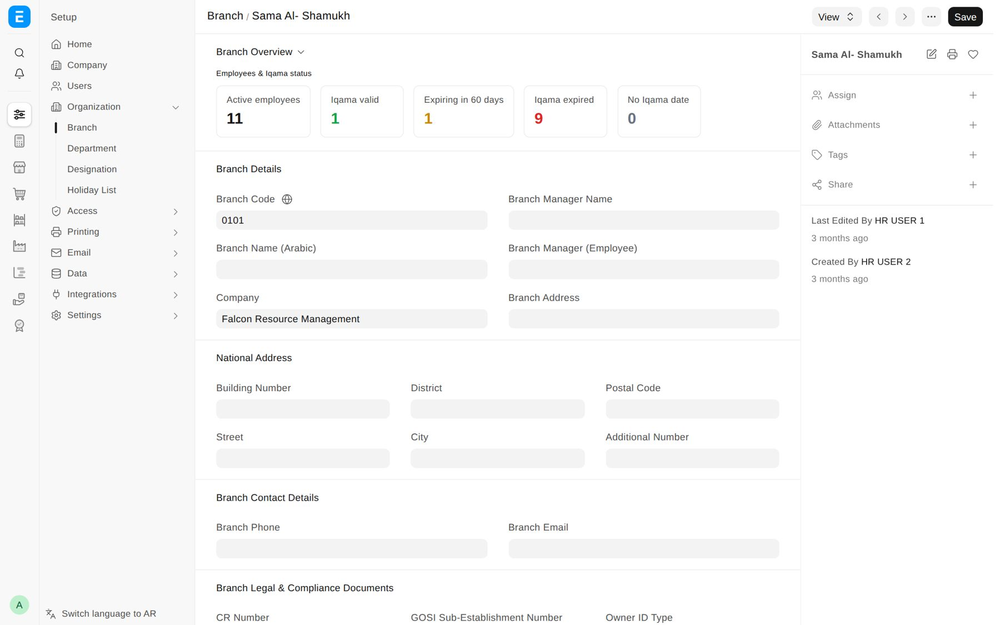
The Branch Overview shows active employees and their Iqama status: valid, expiring in 60 days, expired, and no Iqama date. Click any box to open exactly those employees. The View menu has shortcuts to Employees and the Expiry Center.
Qiwa & Muqeem (new)
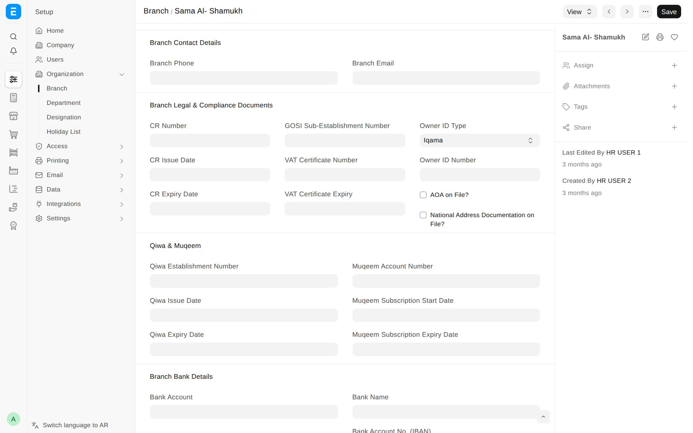
| Field | What to enter |
|---|---|
| Qiwa Establishment Number | The establishment number on the Qiwa portal |
| Qiwa Issue Date / Qiwa Expiry Date | Validity of the Qiwa establishment record (the expiry is tracked) |
| Muqeem Account Number | The company's Muqeem account |
| Muqeem Subscription Start / Expiry Date | The current Muqeem subscription period (the expiry is tracked) |
Together with CR Expiry Date and VAT Certificate Expiry, these four company documents appear in the Expiry Center, the dashboard's Branches tab, the Branch Compliance Register and the company alerts.
The Nitaqat Dashboard (Saudization)
Shows, for every sponsoring branch, its Saudization % compared with the target for its Nitaqat band, and exactly how many Saudis it needs to hire. Open it from Sidebar → Nitaqat Dashboard or the Nitaqat button on the HR Dashboard.
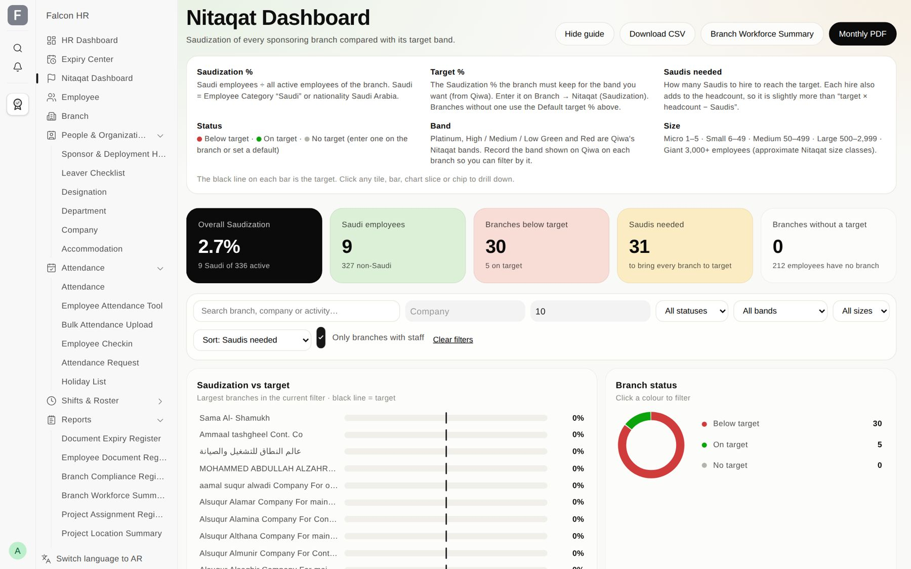
Step 1 — Set the targets (once per branch, from Qiwa)
- Open the Branch and scroll to the new Nitaqat (Saudization) section at the end.
- From Qiwa, copy the Nitaqat Activity and the Current Nitaqat Band (Platinum, High / Medium / Low Green, Red).
- Enter the Target Saudization %: the % the branch must keep for the band you want. Fill in Last Checked on Qiwa and save.
- Not ready yet? Type a Default target % in the dashboard's filter bar. It is used for every branch without its own target, and remembered in your browser.
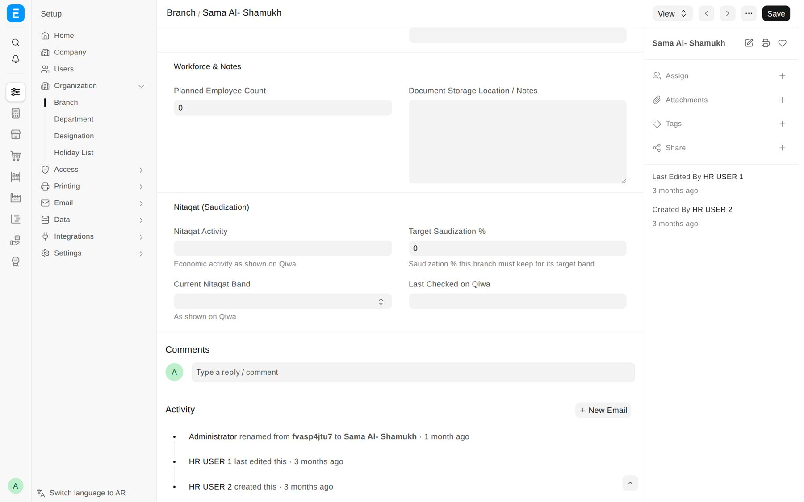
Step 2 — Read the dashboard
| Item | How to read it | Click it to… |
|---|---|---|
| ⚫ Overall Saudization | Saudi ÷ all active employees, company-wide. | open those employees |
| 🟢 Saudi employees | Saudi headcount, and non-Saudi headcount underneath. | open the Saudi employees |
| 🔴 Branches below target | Branches whose Saudization is lower than their target. | filter to those branches |
| 🟡 Saudis needed | Total new Saudi hires needed so every branch reaches its target. | filter to below-target branches |
| ⚪ Branches without a target | Branches with no target and no default, plus employees with no branch. | filter to those branches |
| Saudization vs target (chart) | The largest branches in your filter. The coloured bar is the actual %, the black line is the target: red = below, green = on target, grey = no target. | open the branch |
| Branch status (ring) | How many branches are below, on, or without a target. | filter by that status |
| Nitaqat band (chart) | Branches per band you recorded from Qiwa, plus "Not recorded". | filter by band |
| Size class (chart) | Employees per size class. Green = Saudi, grey = non-Saudi. | filter by size |
| Branch cards | Saudization %, target, a bar with the target line, headcount, Saudis, size, band and a black "Hire N Saudi" chip when below target. | branch name → branch; chips → employees |
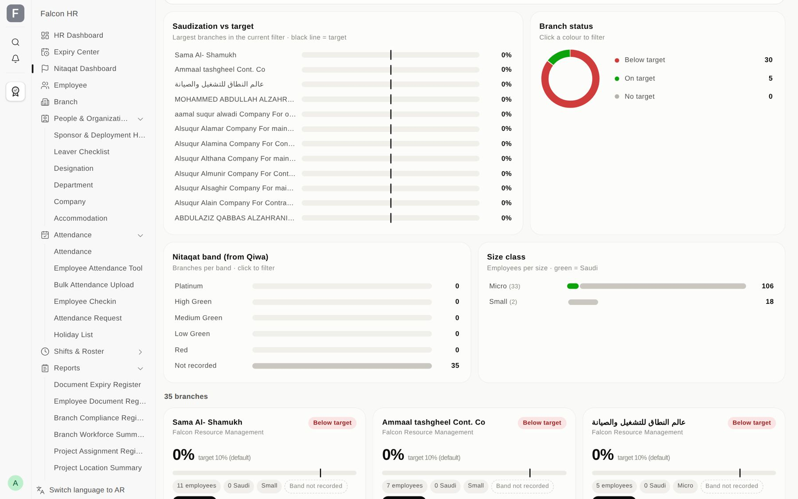
Filters and search
Search (branch, company, activity) · Company · Default target % · Status · Band · Size · Sort (Saudis needed, lowest / highest Saudization, most employees, name) · Only branches with staff · Clear filters. Download CSV exports exactly the branches you are looking at. How to read this page opens and closes the guide panel.
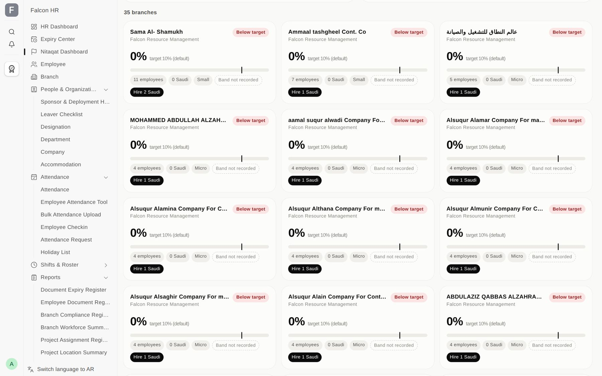
Sponsor & deployment history
Records which branch (sponsor) each employee belonged to, on which project and location, and for how long. One sponsor at a time: starting a new deployment automatically ends the previous one the day before.
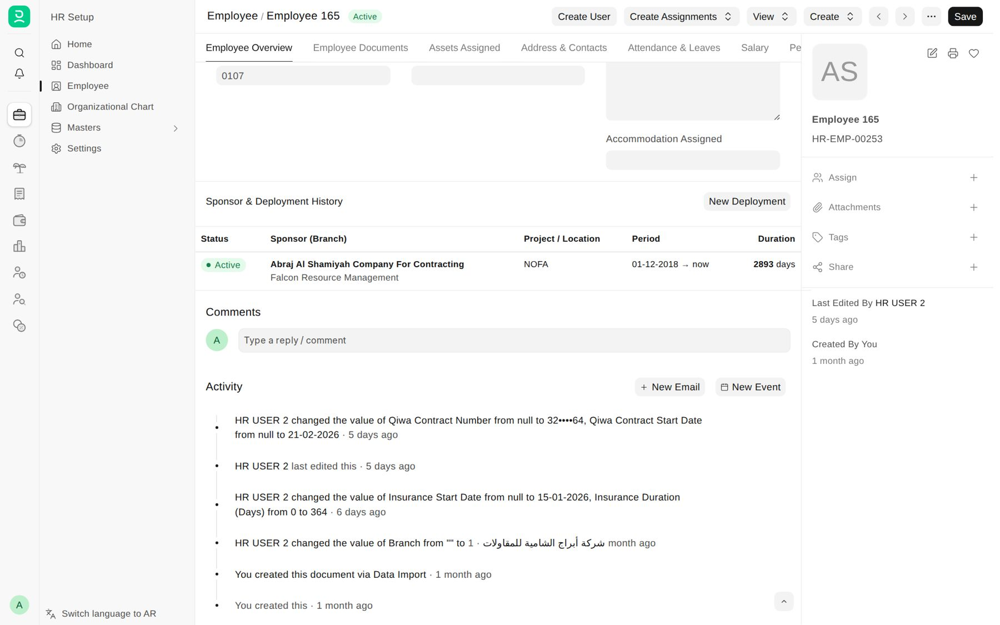
Record a transfer or a project move
- Open the employee and click New Deployment (or Create → New Deployment).
- The form is pre-filled with the employee, current branch, project and today's date. Change the Sponsor (Branch), Project and/or Project Location, and set the From Date.
- Choose a Reason (New Joiner, Sponsorship Transfer, Project Change, Location Change, Contract Renewal, Other), add remarks, and Save.
- Done. The previous deployment closes the day before, and the employee's Branch, Project and Project Location are updated automatically.
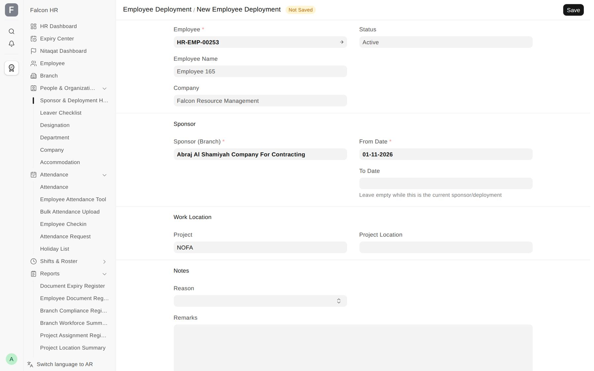
| Rule | What the system does |
|---|---|
| One current sponsor | A new current deployment ends the previous one the day before it starts. |
| No overlaps | Past deployments cannot overlap. You get a clear message naming the clashing record. |
| Duration | Counted in days, from the From Date to the To Date (or to today while current), and refreshed every night. |
| Future dates | A deployment that starts in the future updates the employee only once it begins. |
| Starting history | When Falcon HR was installed, every employee with a Branch got one deployment from their joining date, so history starts complete. |
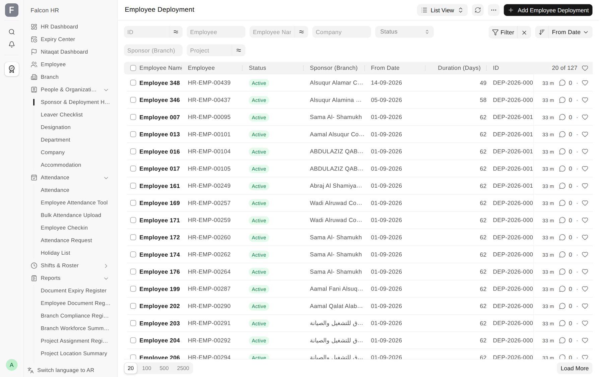
Leaver checklist
When someone leaves, nothing should be forgotten: Iqama, final exit, insurance, GOSI, Qiwa, assets and settlement. Falcon HR uses Frappe HR's Employee Separation with a ready-made Falcon Leaver Checklist.
How it starts
- Automatically: when you set an employee's Status = Left and save, a draft leaver checklist is created and you see a message with a link.
- Manually: on any employee with status Left, click Start Leaver Checklist. If a checklist already exists, the button is Leaver Checklist and opens it, with its status shown at the top of the form.
Working through it
- Open the checklist (from the employee, or Sidebar → People & Organization → Leaver Checklist).
- Check the dates and who does what, then click Submit. Frappe HR creates a task for each step, assigned to the HR role, with start and due dates.
- Close the tasks as you go. The checklist shows progress, and is Completed when all tasks are done.
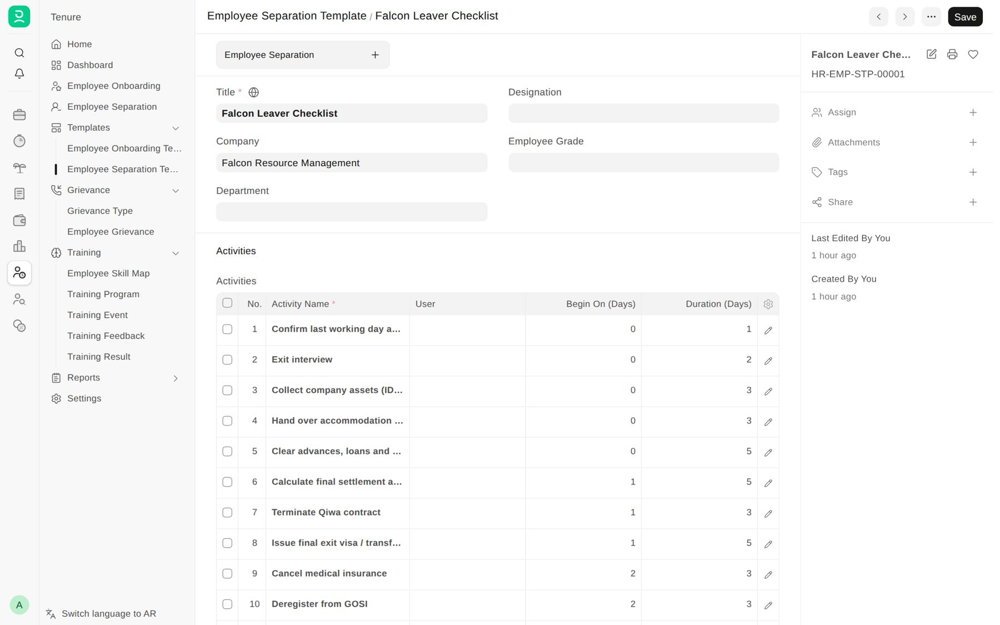
| # | Step | Starts (days after) | Takes |
|---|---|---|---|
| 1 | Confirm last working day and relieving date | 0 | 1 day |
| 2 | Exit interview | 0 | 2 days |
| 3 | Collect company assets (ID card, tools, laptop, phone, SIM) | 0 | 3 days |
| 4 | Hand over accommodation and keys | 0 | 3 days |
| 5 | Clear advances, loans and pending expenses | 0 | 5 days |
| 6 | Calculate final settlement and end-of-service benefits | 1 | 5 days |
| 7 | Terminate Qiwa contract | 1 | 3 days |
| 8 | Issue final exit visa / transfer sponsorship (Muqeem) | 1 | 5 days |
| 9 | Cancel medical insurance | 2 | 3 days |
| 10 | Deregister from GOSI | 2 | 3 days |
| 11 | Return passport and documents to the employee | 3 | 2 days |
| 12 | Remove system and building access | 3 | 1 day |
| 13 | Pay final settlement and get signed clearance | 5 | 5 days |
Monthly management PDF
A one-click report for management covering any of the last 12 months.
- On the HR Dashboard or the Nitaqat Dashboard, click Monthly PDF.
- Pick the Month and Company, then click Download PDF. The file (e.g.
Falcon-HR-Monthly-Report-2026-10.pdf) opens in a new tab, ready to save, print or email.
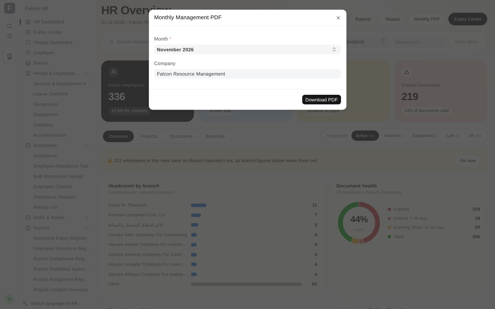
| Section | What it contains |
|---|---|
| Headcount & movements | Active employees, joined and left in the month, branches with staff, employees without a branch |
| Document compliance | Expired / within 30 days / 31–60 days / valid, plus the list of documents to renew now |
| Company documents | Branch CR, VAT, Qiwa and Muqeem documents expiring within 60 days or already expired |
| Nitaqat | Overall Saudization, Saudis needed, and the branches below target |
| Attendance | Submitted attendance in the month by status, and how many employees have attendance |
| Headcount by branch / project | The largest branches and projects |
| Joiners & leavers | Names and dates, with each leaver's checklist status |
| Sponsor & deployment changes | Deployments that started in the month |
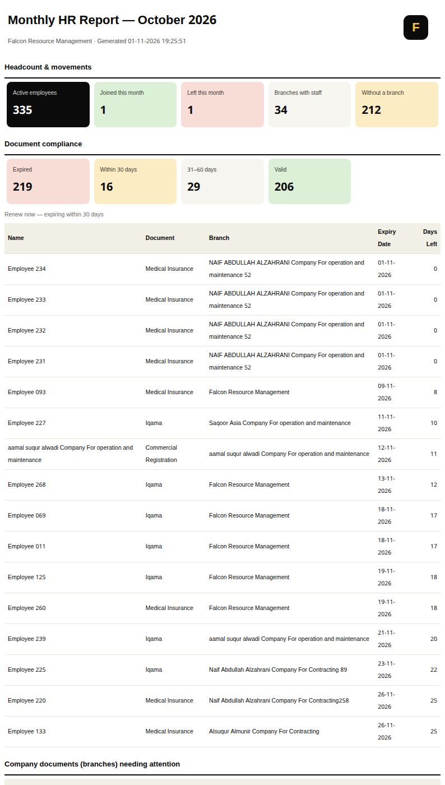
Notifications & alerts — who gets what
There are three kinds of alerts. All of them go to users with the HR Manager or HR User role.
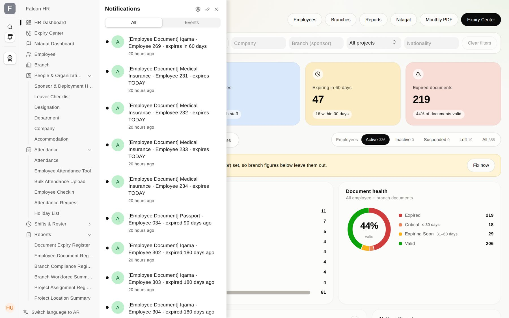
1 · Daily bell alerts (new)
Every morning the system checks every document and posts a reminder to the bell when a document is:
| When | Example of the message |
|---|---|
| 60, 30, 15, 7, 3 and 1 days before expiry | [Employee Document] Iqama · MD Tariqul Islam · expires in 60 days |
| On the expiry day | [Employee Document] Medical Insurance · Md Khokon Mia · expires TODAY |
| The day after expiry, then every 30 days while still expired | [Employee Document] Passport · … · expired 90 days ago |
| Same timing for company documents | [Company Document] Commercial Registration · Branch Sama Al- Shamukh · expires in 30 days |
- The tag tells you at a glance: [Employee Document] or [Company Document].
- Click the alert to open the employee or branch.
- Only active employees get alerts, so nobody is reminded about people who have left.
- Each person only gets alerts for employees and branches they are allowed to see, and the same alert is never sent twice on the same day.
- The message does not include document numbers. Open the record to see them.
2 · Employee document alerts (already on your system)
These were set up earlier and still work. Each sends a system notification and an email to HR, 15 days before expiry, for: Iqama, Visa, Passport, Qiwa Contract, Medical/Health Insurance, GOSI and Driving License. Their names end in "Expiry Alert - System Notification" / "Expiry Alert - Email".
3 · Company document alerts (new)
| Document | System notification | |
|---|---|---|
| Commercial Registration (CR) | 60 and 15 days before | 30 days before |
| VAT Certificate | 60 and 15 days before | 30 days before |
| Qiwa Establishment | 60 and 15 days before | 30 days before |
| Muqeem Subscription | 60 and 15 days before | 30 days before |
They are called "Company Doc - … Expiry - … Days - System/Email" and the subject starts with [Company Document].
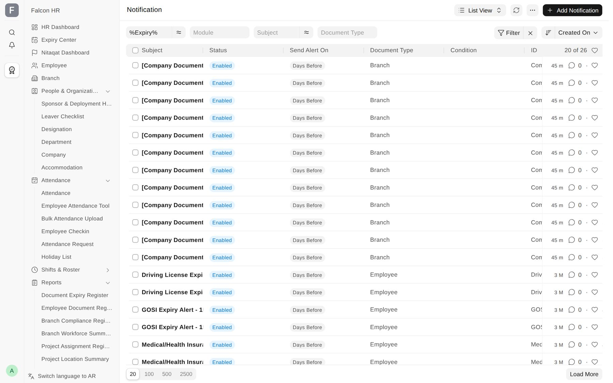
Changing an alert
- Open Alert Rules and click the alert.
- Change Days Before or After (for example 15 → 30), the Recipients (role or specific people), or the message.
- To pause an alert, untick Enabled. Save.
Reports & downloading to Excel
Six ready-made reports. Open them from Sidebar → Reports, the Reports button on the dashboard, or the Expiry Center.
| Report | What it lists | Filters |
|---|---|---|
| Document Expiry Register | One row per document (employee + company): number, branch, company, project, expiry date, days left, status. Summary counts on top. | Show (All/Employee/Branch), Document, Branch, Status |
| Employee Document Register | One row per employee with all 7 documents side by side: number, expiry and days left for each, plus designation, nationality, branch, company, project and location. Your master document sheet. | Branch, Company, Designation, Employee Status, "Has expired document" / "Expiring in 60 days" |
| Branch Compliance Register | One row per branch: code, company, city, manager, GOSI number, and the number, expiry and days left for CR, VAT, Qiwa and Muqeem, plus a Missing Documents column. | Company |
| Branch Workforce Summary | Per branch: planned vs actual headcount and the gap, Saudi / non-Saudi, Saudization %, Iqama valid / ≤60 days / expired / missing, expired insurance, number of projects. Includes a chart. | Only branches with staff |
| Project Assignment Register | Every employee grouped by project: location, designation, branch, nationality, Iqama expiry, remarks. Includes a chart. | Project contains, Location contains, Branch |
| Project Location Summary | Per project (or per location): employees, sponsors, locations/projects, Iqama expired / expiring, main nationality. | Group by Project / Location |
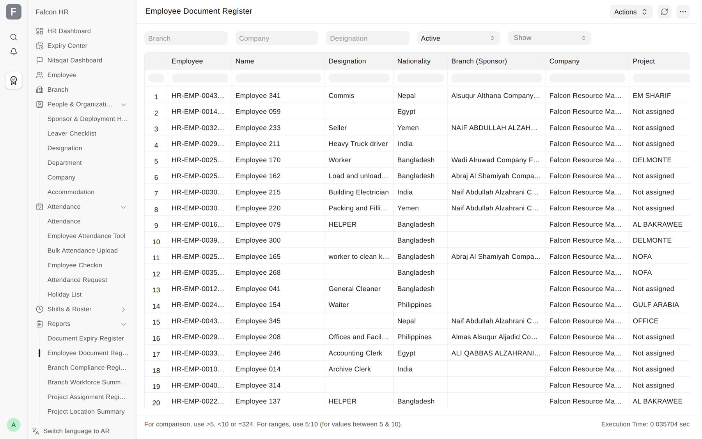
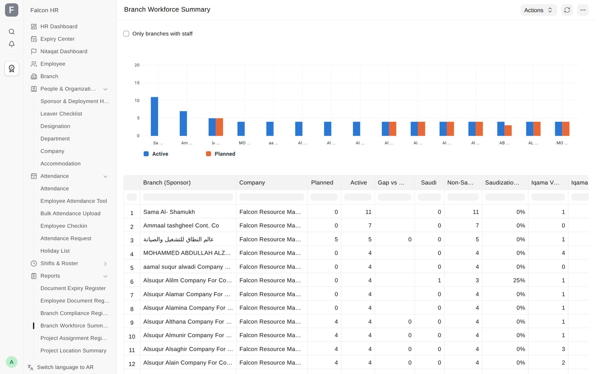
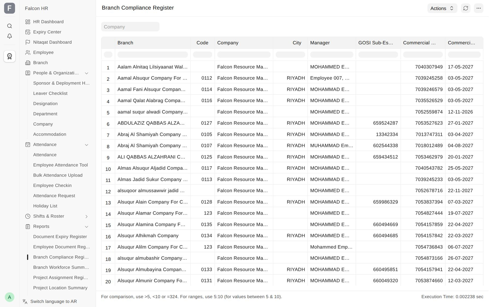
How to download a report to Excel
- Open the report and set the filters you want.
- Click the ⋯ menu (top right) → Export.
- Choose Excel (or CSV), keep "Include filters" ticked if you want them printed on top, and click Export. The file downloads to your computer.
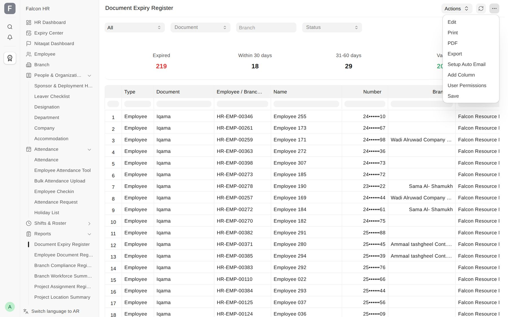
Attendance — daily, bulk and Excel upload
Attendance uses the standard Frappe HR screens. There are several ways to record it. For many employees over many days, use Bulk Attendance Upload (method C), the easiest bulk method.
A · One person
Attendance → + Add Attendance. For corrections and single entries.
B · Many people, one day
Employee Attendance Tool. Tick employees and mark them Present / Absent / Half Day / Work From Home.
C · Many people, many days ⭐
Bulk Attendance Upload. Download a ready sheet with every employee and date, type the status, review, then import.
E · Automatic
From Employee Checkin (biometric / mobile), using the shift's auto-attendance (Chapter 14).
B · Employee Attendance Tool
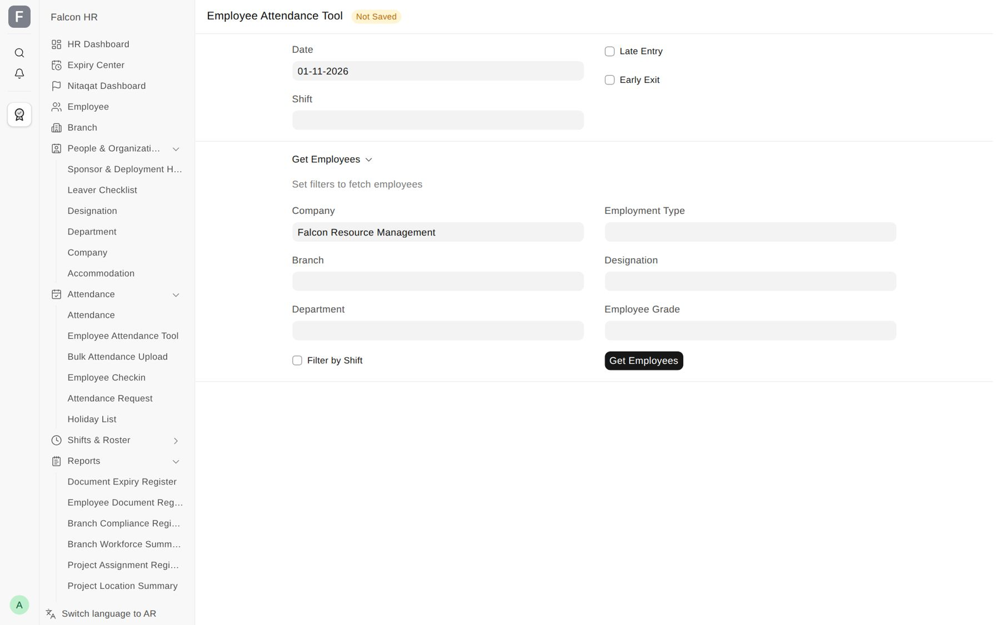
- Sidebar → Attendance → Employee Attendance Tool.
- Pick the Date, and optionally a Company, Branch or Department to narrow the list.
- Choose the Status and, optionally, the Shift and Late Entry / Early Exit.
- Tick the employees and click Mark Attendance. Employees already marked for that day are shown separately, so nobody is marked twice.
C · Bulk Attendance Upload (recommended) ⭐
Sidebar → Attendance → Bulk Attendance Upload. This Falcon HR page replaces the old HRMS "Upload Attendance" tool, which HRMS removed in its 16.5x versions. Nothing is saved until you confirm in step 4.
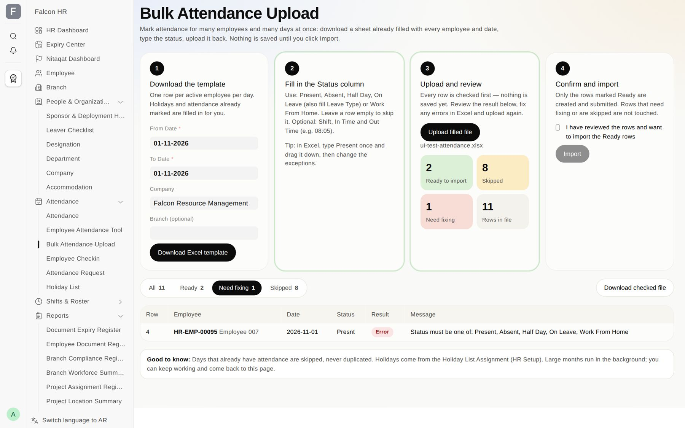
- Download the template. Choose From and To dates (up to 62 days), plus optional Company and Branch, and click Download Excel template. You get one row per active employee per day, already filled with ID, name, branch, project and date. Holidays come marked
Holiday, days already marked show their status, and dates before joining or after leaving are left out. - Fill in the Status column in Excel:
Present,Absent,Half Day,On Leave(also fill Leave Type) orWork From Home. Leave a row empty to skip it. Optional: Shift, In Time, Out Time (e.g.08:05). Tip: type Present once, drag it down, then change the exceptions. - Upload and review. Click Upload filled file. Every row is checked and nothing is saved yet. Use the tabs to look through Ready, Need fixing and Skipped, each row with its reason. Download checked file gives you the same list in Excel. If something needs fixing, correct your sheet and upload it again.
- Confirm and import. Tick "I have reviewed the rows…", which unlocks Import, then click Import and confirm. Only Ready rows are created and submitted; you see a progress bar and the final counts. Large months run in the background, so you can keep working.
| Result | Why | What happens |
|---|---|---|
| Ready | Valid row | Attendance is created and submitted |
| Skipped | Empty status, Holiday, or that day is already marked | Nothing changes, and no duplicates are ever created |
| Error | Wrong status spelling, unknown employee ID, invalid date, On Leave without Leave Type, duplicate row… | The row is not imported; the message says what to fix. The other rows are not affected |
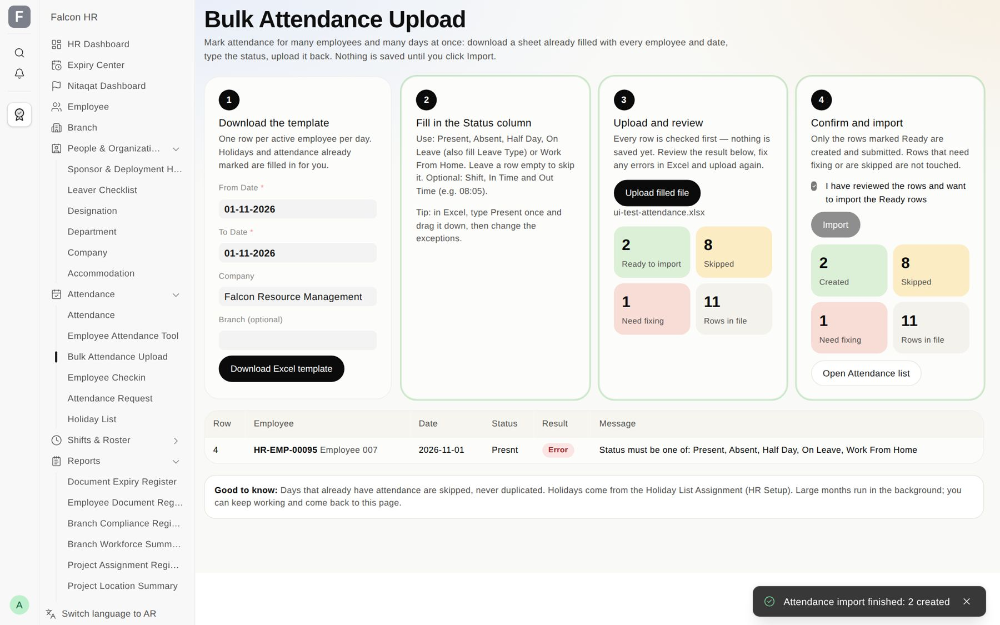
D · Uploading attendance with Data Import (any columns)
Use this when your sheet comes from another system (a biometric export, a contractor's timesheet) with In/Out times, shifts or Late Entry flags.
- Sidebar → Tools & Settings → Data Import → + Add Data Import. The import opens as a 4-step wizard: Config → Preview → Fix Issues → Import.
- Config: Document Type Attendance, Import Type Insert New Records, and tick Submit After Import so the attendance is final straight away.
- Click Download Template (right of Upload file), choose Excel, keep the columns below and download it. Fill one row per employee per day.
- Drag your filled file into Upload file (or click to browse; a Google Sheet link also works) and click Next.
- Preview shows your rows as they will be imported. Fix Issues lists any problems per row; correct them in Excel and upload again.
- Import: start the import. When it finishes you see how many rows succeeded; download the failed rows, fix them and import just those again.
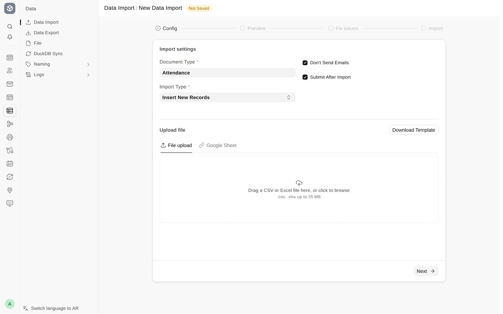
| Column | Required? | What to put |
|---|---|---|
| Employee | Yes | The employee ID, e.g. HR-EMP-00253 (not the name) |
| Attendance Date | Yes | The date, e.g. 2026-11-01 |
| Status | Yes | Exactly one of: Present, Absent, Half Day, On Leave, Work From Home |
| Company | Yes | Falcon Resource Management |
| Shift | Optional | Shift Type name, e.g. Shift Standard |
| Leave Type | If On Leave | e.g. Annual Leave |
| Late Entry / Early Exit | Optional | 1 = yes, 0 = no |
| In Time / Out Time | Optional | e.g. 2026-11-01 08:05:00 |
Checking attendance
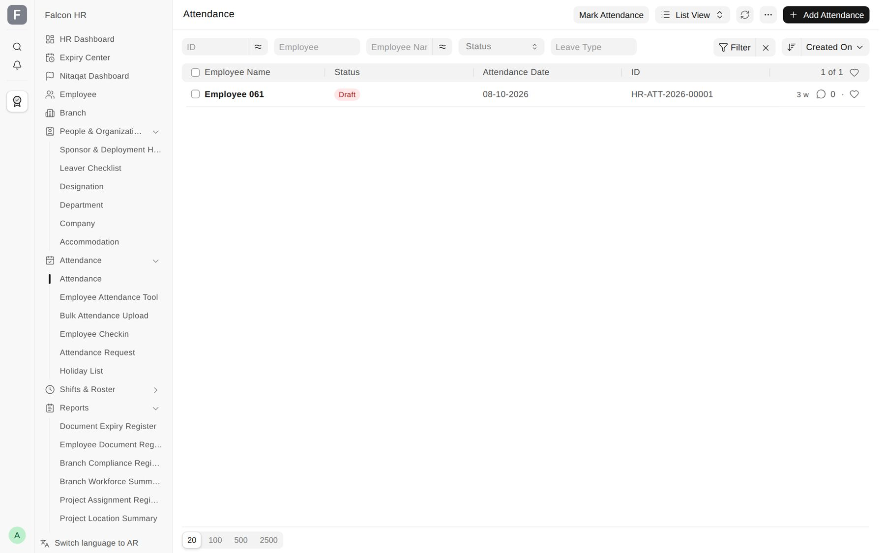
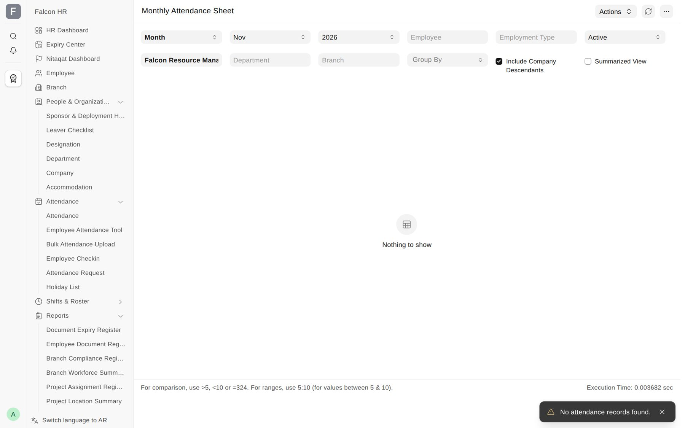
The Monthly Attendance Sheet shows the whole month as a grid (P / A / HD / L / WFH per day) and totals per employee. Choose the month, year and company, then export it like any other report.
Shifts & the Roster
Shifts tell the system when people are meant to work. The roster shows who works which shift on which day.
Step 1 — Define your shifts (Shift Type)
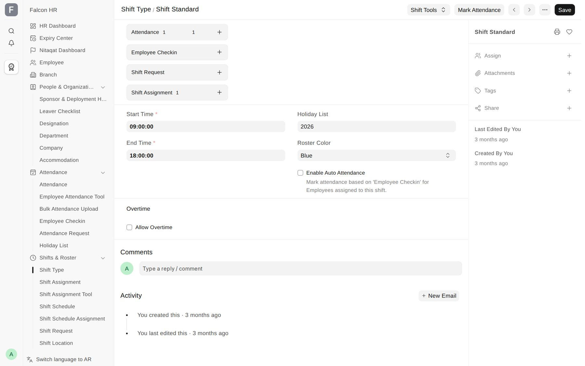
| Field | Meaning |
|---|---|
| Start Time / End Time | The shift hours, e.g. 06:00–14:00. Night shifts can cross midnight. |
| Holiday List | Which days are holidays / weekly off for this shift. |
| Enable Auto Attendance | Turn attendance into Present/Absent automatically from check-ins. |
| Determine Check-in and Check-out | Use the first check-in and last check-out, or alternate IN/OUT. |
| Late Entry / Early Exit Grace Period | Minutes allowed before someone is marked late or leaving early. |
| Working Hours Threshold for Half Day / Absent | Fewer hours than this = Half Day or Absent. |
| Begin check-in before shift start | How early a check-in still counts for this shift. |
| Roster Color | The colour of this shift in the Roster. |
Create one Shift Type per pattern you run, for example Morning 06–14, Evening 14–22, Night 22–06, Office 09–18.
Step 2 — Give people their shifts
- Default Shift on the Employee (Attendance & Leaves tab) is the shift they normally work.
- Shift Assignment Tool: assign a shift to many employees for a date range in one go. Filter by company, branch, department or designation, tick the employees, and click Assign Shift.
- Shift Assignment: one employee, one shift, from / to dates. For exceptions.
- Shift Schedule + Shift Schedule Assignment: rotating patterns, e.g. a week of mornings then a week of nights, or 6 days on / 1 off. Create the pattern once and assign it to a group; the system creates the assignments for you.
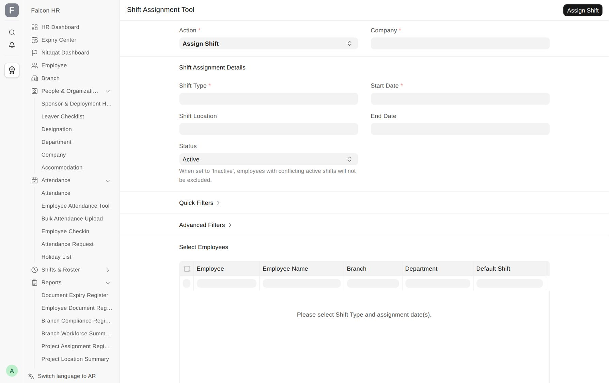
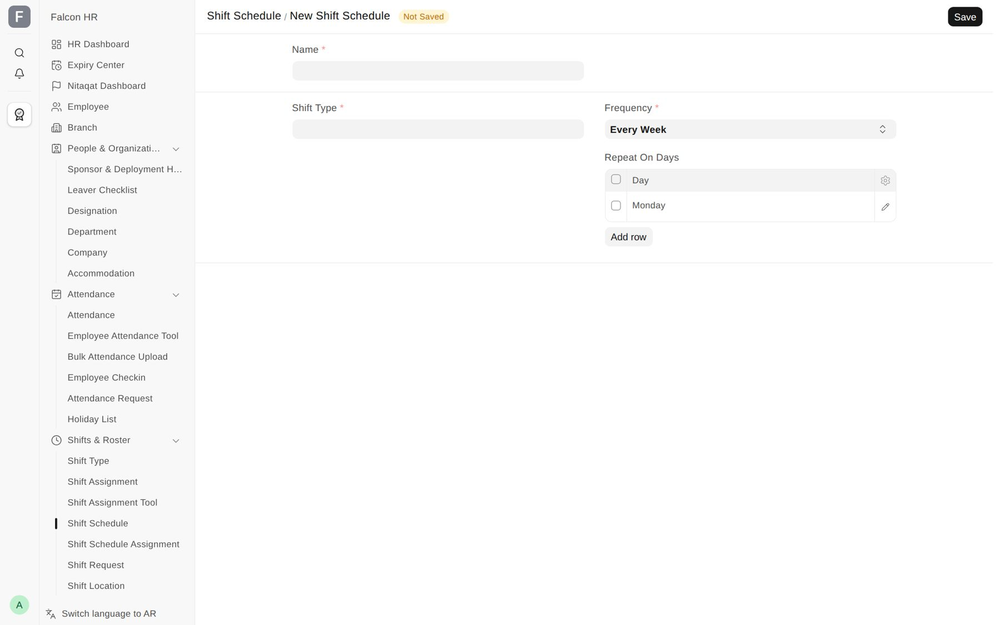
Step 3 — Use the Roster
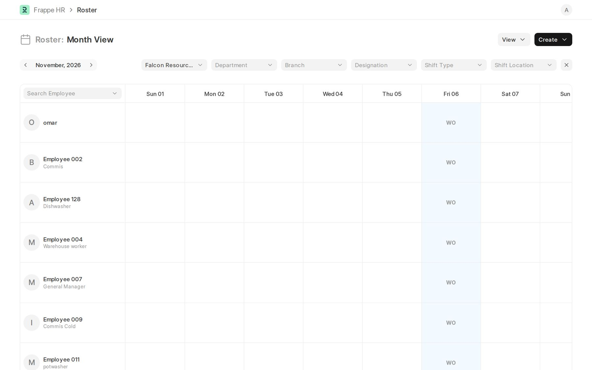
/hr/roster or from Frappe HR → Shift & Attendance.- Open the Roster and pick the month with the arrows. Switch between month and week with View.
- Use the filters (Company, Department, Branch, Designation, Shift Type, Shift Location) to show one site or team, and Search Employee to find a person.
- Click an empty day in a person's row to assign a shift, or use Create → Shift Assignment for longer periods.
- Drag a shift to another day or person to move it, and click a shift to edit or delete it.
- Shifts appear in their Roster Color, so gaps and double bookings are easy to spot. Weekly offs and holidays show as WO (from the Holiday List Assignment).
Importing, exporting & mapping all your data
Any list in the system (Employees, Branches, Attendance…) can be exported to Excel and imported back. This is the fastest way to fill in or correct data for many records at once.
Export (get data out)
- Open the list, e.g. Employee, and add filters if needed (e.g. Status = Active).
- Click ⋯ (or the Actions menu after ticking rows) → Export.
- Choose Excel, tick the fields you want (always keep ID), and export.
Or use a report (Chapter 12). The Employee Document Register is the best "everything about everyone" export.
Update many records at once (mass correction)
Example: fill in the Branch (sponsor) for the 212 employees who don't have one.
- Dashboard → yellow banner → Fix now. This opens the employees with no branch. Then ⋯ → Export, Excel, with the columns ID, Full Name and Branch.
- In Excel, type the correct branch name in the Branch column. It must match the Branch name exactly; copy it from the Branch list to be safe.
- Data Import → + Add Data Import → Document Type Employee, Import Type Update Existing Records.
- Upload your file → Next → check Preview and Fix Issues → Import. Only the columns in your file are changed.
Add new records (new employees, branches)
Data Import → Import Type Insert New Records → Download Template → fill one row per record → upload → Next → Preview → Fix Issues → Import.
Field map: Excel column → screen
| Excel column (template title) | Where it appears |
|---|---|
| ID | Employee ID (HR-EMP-xxxxx). Needed for updates. |
| Branch | Sponsoring company. Drives branch headcounts, reports and alerts. |
| Project Assigned To / Project Location | Projects tab, project reports |
| Nationality, Employee Category (Saudi / Non-Saudi) | Nationality mix, Saudization % |
| Iqama Number / Iqama Expiry Date | Expiry Center, alerts, Branch Overview |
| Visa Number / Visa End Date | Expiry Center, alerts |
| Passport Number / Valid Up To | Expiry Center, alerts |
| Qiwa Contract Number / Qiwa Contract End Date | Expiry Center, alerts |
| Health Insurance No / Insurance Expiry Date | Expiry Center, alerts |
| GOSI ID / GOSI End Date | Expiry Center, alerts |
| Driving License Number / Driving License Expiry Date | Expiry Center, alerts |
| Status, Relieving Date | Active / Left switch, leavers chart |
| Branch: CR / VAT / Qiwa / Muqeem numbers and expiry dates, Planned Employee Count | Branch Compliance Register, Branch Workforce Summary (plan vs actual), company alerts |
YYYY-MM-DD (e.g. 2027-03-31), or format the cells as Date. Text like "31/3/27" may be read wrongly.Your daily & monthly routine
☀️ Every morning (5 minutes)
1. Check the bell for new alerts.
2. Open the HR Dashboard and look at the yellow and red tiles.
3. Click Expiring in 60 days and start the renewals that are Critical.
4. Mark yesterday's attendance (tool or Bulk Attendance Upload).
5. Work through open leaver checklist tasks.
📅 Every week
1. Expiry Center → Board view in the HR meeting.
2. Roster → check next week per branch.
3. Dashboard → Projects tab: anyone unassigned?
4. Download the Document Expiry Register for management.
5. Record any sponsor / project moves as New Deployment.
🗓️ Every month
1. Monthly Attendance Sheet → export for payroll.
2. Branch Workforce Summary → planned vs actual, Saudization %.
3. Branch Compliance Register → CR / VAT / Qiwa / Muqeem.
4. Dashboard → Left → close Iqama / insurance for leavers.
5. Nitaqat Dashboard: check branches below target; update bands from Qiwa.
6. Download the Monthly PDF for management.
🧹 Keep data clean
• Every employee has a Branch (sponsor).
• Every document has an expiry date and an attachment.
• Projects typed the same way every time.
• Leavers set to Left with a relieving date.
Questions & troubleshooting
| Question | Answer |
|---|---|
| An employee is missing from the Expiry Center. | They have no expiry date, or they are not Active. Fill in the date, or switch the status to All employees. |
| I don't receive alerts. | You need the HR Manager or HR User role, and permission for those employees or branches. Emails also need an Email Account on the site. |
| The Administrator sees each alert twice. | That's normal. Administrator sees every user's notifications; each HR user receives each alert only once. |
| Branch numbers look too low. | Many employees have no Branch set (see the yellow banner). Fill it in (Chapter 15). |
| The sidebar or icon doesn't appear after an update. | Hard-refresh the browser with Ctrl + Shift + R. |
| A project appears twice with different spellings. | Correct the spelling on those employees (one at a time or via Excel update) so all use the same name. |
| A branch shows "No target" on the Nitaqat Dashboard. | Enter its Target Saudization % on the Branch (Nitaqat section) or type a Default target % in the dashboard filter bar. |
| I can't save a deployment for an employee. | You need permission to edit that Employee, and dates can't overlap an earlier deployment. The message names the clashing record. |
| No leaver checklist appeared. | It is created when the status changes to Left and is saved. Otherwise click Start Leaver Checklist on the employee. |
| Fridays and holidays are not marked in the attendance template. | Create and submit a Holiday List Assignment for the company (see Bulk Attendance Upload in the Attendance chapter). |
| My Excel import fails. | Open the import and go to Fix Issues to read the error per row, download the failed rows, fix them and import again. For attendance, Bulk Attendance Upload shows the same per-row check before saving anything. The most common causes are a wrong employee ID, a date format, or a Status spelled differently. |
| Can I change the 30 / 60 day limits? | The Alert Rules (Chapter 11) can be changed on screen. The colour limits and the daily alert days are part of the app; ask your developer. |
Words we use
| Word | Meaning in Falcon HR |
|---|---|
| Branch / Sponsor | The company (branch) that sponsors an employee. One employee has one sponsoring branch at a time. |
| Company | The main legal entity in the system: Falcon Resource Management. |
| Project / Project Location | Where the employee is currently working, e.g. NOFA, Riyadh. |
| Expired / Critical / Expiring Soon / Valid | Past expiry / 30 days or less / 31–60 days / more than 60 days. |
| Employee status | Active, Inactive, Suspended or Left, as set on the Employee. |
| Saudization % | Saudi employees ÷ all active employees in a branch. |
| Shift Type / Assignment / Schedule | Shift definition / one person on a shift for some dates / repeating rotation pattern. |
| Roster | The calendar of who works which shift on which day. |
| Nitaqat / Saudization | Saudi Arabia's localisation programme; the Saudization % is Saudi employees ÷ all employees of the establishment (branch). |
| Band | Platinum, High / Medium / Low Green or Red, as shown on Qiwa. |
| Deployment | A period in which an employee was sponsored by one branch and worked on a project/location. |
| Leaver checklist | Frappe HR "Employee Separation" built from the Falcon Leaver Checklist template. |
| Bell / Notification | The in-app list of alerts (Sidebar → Notification). |
Falcon HR · app falcon_hr · built on Frappe HR v16 · guide version 1.3, 1 November 2026.